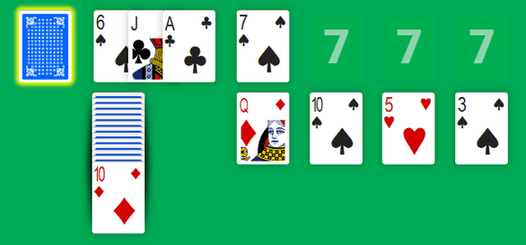

According to Wikipedia, the legend says that Richard A. Canfield was a famous gambler and owner of the Canfield Casino in Saratoga Springs, New York during the 1890s.
Gamblers at his casino played a solitaire game by “buying” a deck of cards for $50 and earning $5 for each card they managed to place in the Foundations. If one was fortunate enough to place all 52 cards into the Foundations, the player would win $500.
Although players make a loss (about an average of five to six cards), the game proved to be popular, and Canfield became rich...
Some people think that the game played in Canfield's casino was Klondike Solitaire. In fact, Richard Canfield himself call the game Klondike. In “The Official Rules of Card Games” from 1897, the description of Canfield matches exactly to the rule of Klondike.
Canfield is also known as “Demon” or “Demon Thirteen” in UK and Ireland. There is also an easier variant, “Storehouse”, where the four Two are used to start each Foundation. Then Foundations build upward in suit up to the aces.
Canfield Solitaire is played with one standard pack of 52 playing cards.

The game starts by turning one or three cards from the Stock to the Waste. As always, your goal is to move all cards onto the four Foundations.
You can play a card, provided two conditions:
To start a Foundation, a card must have the same rank as the first card on the first Foundation. A card can go to a Foundation when it's the “next” card in the same suite. For example, if the Foundation started with a 7, the order of the cards will be: 7, 8, 9, 10, J, Q, K, 1, 2, 3, 4, 5 and 6.
You can move a card in a Tableau pile, provided it's the “previous” card but in alternate color. Thus, a red 9 goes on a black 10 and a black King can go on a red Ace.
You can also move an entire Tableau pile onto another pile, as long as the bottom card from the moved pile is the “previous” of the target pile.
As soon as one Tableau column becomes empty, this pile is filled by the top card of the Reserve. When the Reserve is exhausted, you can move any playable card on this empty pile.
When no more moves are possible, you deal one or three cards from the Stock to the Waste before continuing the game. When the Stock is exhausted, the Waste is flipped over to become a new Stock.
In M. Canfield's casino, winning was unlikely. One player could manage to place an average of five to six cards to the Foundations without re-deal.
Jan Wolter wrote a solver and ran it on 50,000 random Canfield deals. It shown that between 71% and 72% of all games are possible to win (cf. Experimental Analysis of Canfield Solitaire). For strategic expert-level players, the highest potential win rates is around 35%. For casual players, the win rate averages at about 15%.
It's a little easier to win with unlimited re-deal... but it also depends on whether cards are dealt one or three at a time.
Anyway, Canfield is another interesting variation compared to the familiar Klondike, which deserves a chance to be played. It's easy enough to master and the addition of a Reserve pile brings an extra level of pondering. Try Canfield Solitaire or Canfield Turn Three online if you want to tackle a new patience card game.
As usual with Solitaire-Play, these are responsive solitaire games. You can play them for free with phone, tablet or desktop!
Michel (2018/12/17)